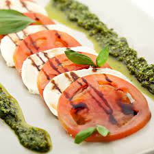

Tomates Mozarella

Description
C'est l'été, il fait chaud et il est temps de manger des plats frais !
Incontournable par sa fraicheur et ses arômes, la tomate mozarella est simple, rapide et
léger. Bref, un plat parfait en été !
Ingredients
- Tomates
- Mozarella
- Huile d'olive
Steps
- Couper les tomates en tranches, ainsi que la mozarella
- Disposer les tomates et la mozarella selon votre préférence.
- Ajouter un peu d'huile.
- Dégustez !